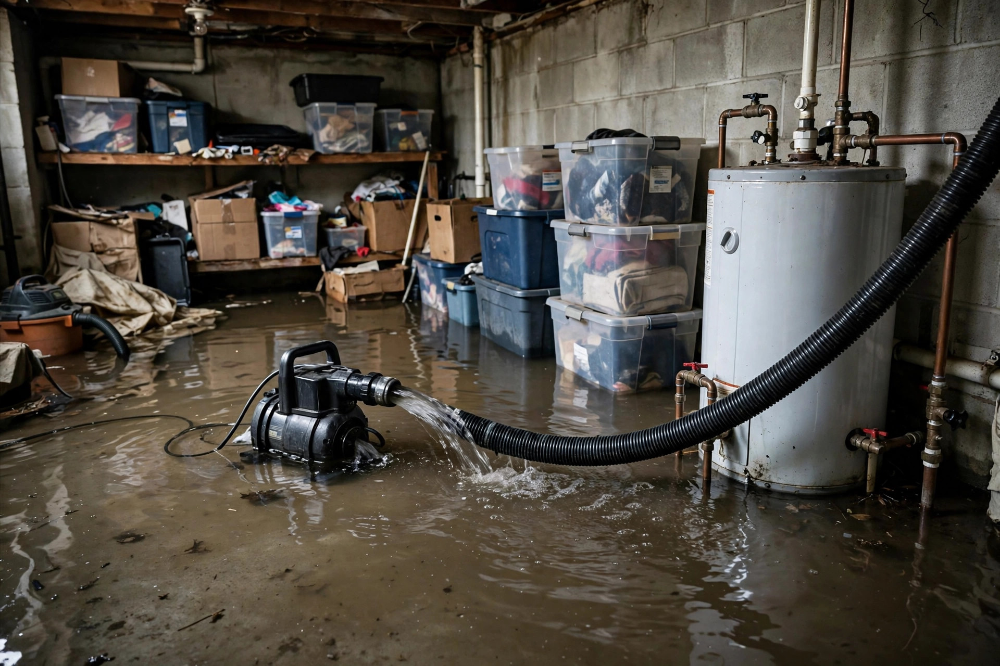

Flooded Basement Cleanup in Nampa, ID
A flooded basement is overwhelming — water, ruined belongings, and the fear of mold. We pump it out, dry it thoroughly, and get the space back to normal.

Common questions, straight answers
Is basement flood water safe to walk through?
Assume it isn't. Flood water can carry sewage, chemicals, and sharp debris. Wait for guidance before entering, and cut power to the area first.
How much water can you pump out of a basement?
Submersible pumps handle inches to feet of standing water. The pump-out is the first step — extraction and drying follow.
What about everything stored in the basement?
Porous items soaked in contaminated water usually can't be saved. Hard goods get cleaned. We'll help you sort what's recoverable.
Does irrigation season make Nampa basements flood more?
Yes. The Nampa & Meridian Irrigation District runs water from about April 15 through October. High canal levels plus summer storms raise the risk for low-lying basements.
How long before the basement is usable again?
Pump-out and drying take days, not hours. Full restoration — drywall, flooring, paint — follows once everything tests dry.
Not all flood water is equal
The cleanup protocol depends entirely on what the water carried in.
Clean water
Supply line breaks and rain intrusion. The water itself is clean, but it becomes gray within 48 hours as it picks up contaminants from surfaces.
Gray water
Washing machine or dishwasher discharge. Contains chemicals and microbes — porous materials it touches usually need removal.
Black water
Sewage backup or ground flooding. Everything porous it contacts is discarded. This requires full protective protocol and disinfection.
After a July thunderstorm, a Nampa family's basement takes on four inches of water from an overwhelmed window well. The pump clears it overnight, soaked carpet comes out, and drying equipment runs for three days before the space is declared dry.
What drives the price
Flood cleanup cost depends on depth, contamination, and how long water stood.
| Factor | Impact |
|---|---|
| Water depth | Deeper water means longer pump-out and more saturated material |
| Contamination level | Clean water vs. sewage changes the entire protocol |
| Finished vs. unfinished | Finished basements need more demolition and rebuild |
Why Nampa basements flood in summer
The Nampa & Meridian Irrigation District delivers water from roughly April 15 through October. Canals run full for months — and when summer storms hit, low basements take the hit.
Water out first
Submersible pumps clear standing water fast. Every hour of standing water means deeper saturation into walls and slab.
Then dry completely
Industrial dehumidifiers and air movers run until meters confirm the structure is dry — not just the surface.
What flooded basement cleanup covers
- Standing water pumped out and extracted
- Damaged drywall, carpet, and insulation removed
- Hard surfaces cleaned and disinfected
- Structural drying with commercial equipment
- Moisture verification before rebuild begins
The drying phase, explained
Pump-out gets the visible water. But drywall, framing, and concrete hold far more than the eye sees. The drying phase targets that hidden moisture with a combination of airflow and dehumidification.
Air movers push dry air into wall cavities and across surfaces while dehumidifiers pull the evaporated moisture out of the building. This runs for days, not hours — concrete and framing release water slowly. Moisture meters track progress daily against dry standards established from unaffected areas.
Rushing this phase is the most common mistake in flood recovery. Surfaces feel dry long before the structure is. Rebuilding over damp framing traps moisture and guarantees mold within weeks.
During drying, expect daily check-ins. Technicians take moisture readings, reposition equipment as zones dry, and adjust dehumidifier settings. You'll hear the equipment running constantly — that's normal and necessary. Turning it off early to save on noise or power is the fastest way to end up with a mold problem on top of the flood.
Basement underwater?
Pump-out can't wait. Call now and we'll get water moving out today.